Cortes na tesoura
Precisão e acabamento para um visual que respeita sua personalidade.
Agendar serviço ↗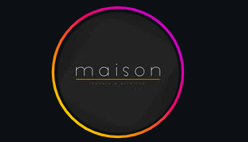
BARBEIRO EM BAURU
Mais do que um corte, uma experiência construída com dedicação, técnica e paixão pela profissão.
O QUE EU FAÇO
Cada detalhe importa. Conheça os serviços disponíveis e escolha o que combina com você.
Precisão e acabamento para um visual que respeita sua personalidade.
Agendar serviço ↗Transições limpas e técnica apurada para um resultado marcante.
Agendar serviço ↗Um ritual de cuidado, conforto e acabamento impecável.
Agendar serviço ↗Sobrancelhas, depilação nasal e luzes Freehand para completar seu estilo.
Agendar serviço ↗MINHA HISTÓRIA
Minha história com a profissão começou muito antes de eu imaginar que ela se tornaria parte da minha vida.
Cresci dentro de um salão de beleza, observando minha mãe cortar cabelos. Aos 12 anos, nasceu minha paixão por cortar cabelos. Com o passar dos anos, aquilo deixou de ser apenas uma curiosidade e se tornou parte da minha identidade.
Hoje, aos 36 anos, continuo exercendo essa profissão com o mesmo interesse em aprender, evoluir e aperfeiçoar meu trabalho. Também sou estudante de Ciência da Computação e estou construindo uma transição profissional para a área de tecnologia.
“Nossa história é construída por todas as experiências que vivemos.”James Pazini Barbeiro por paixão. Profissional por dedicação.
TRABALHOS
Cada corte, cada detalhe e cada transformação contam uma história.
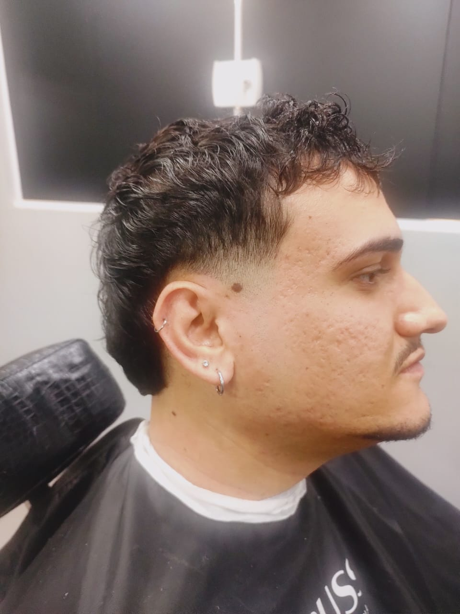
MAISON CABELO E ESTÉTICA
Um espaço para receber você.
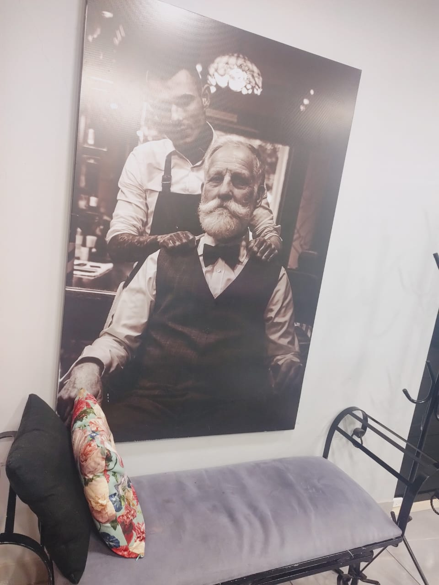
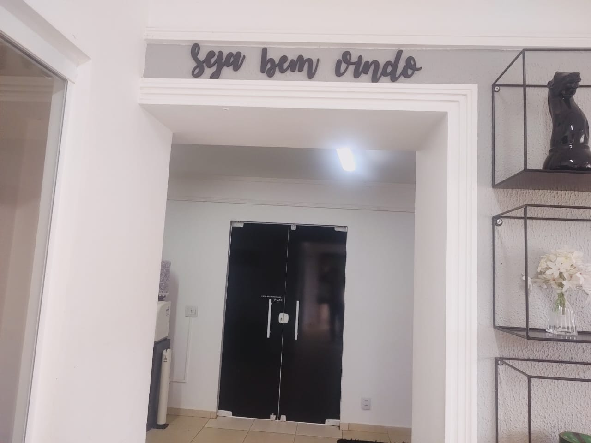
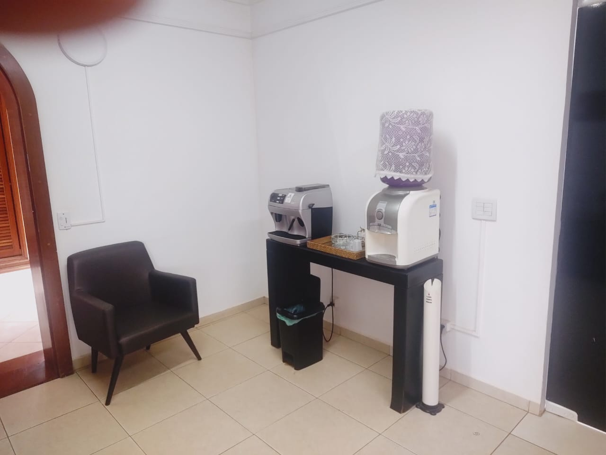
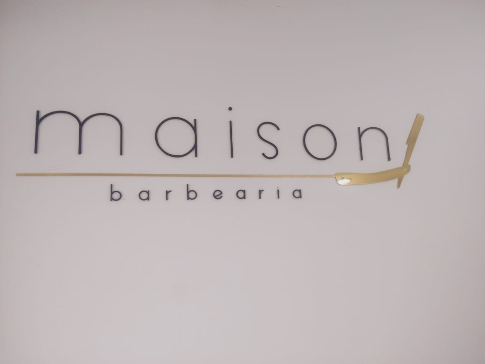
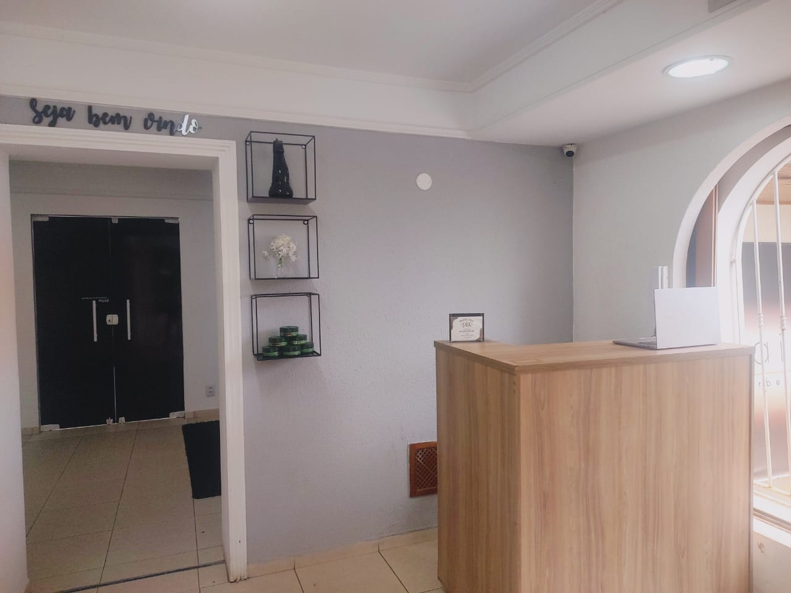
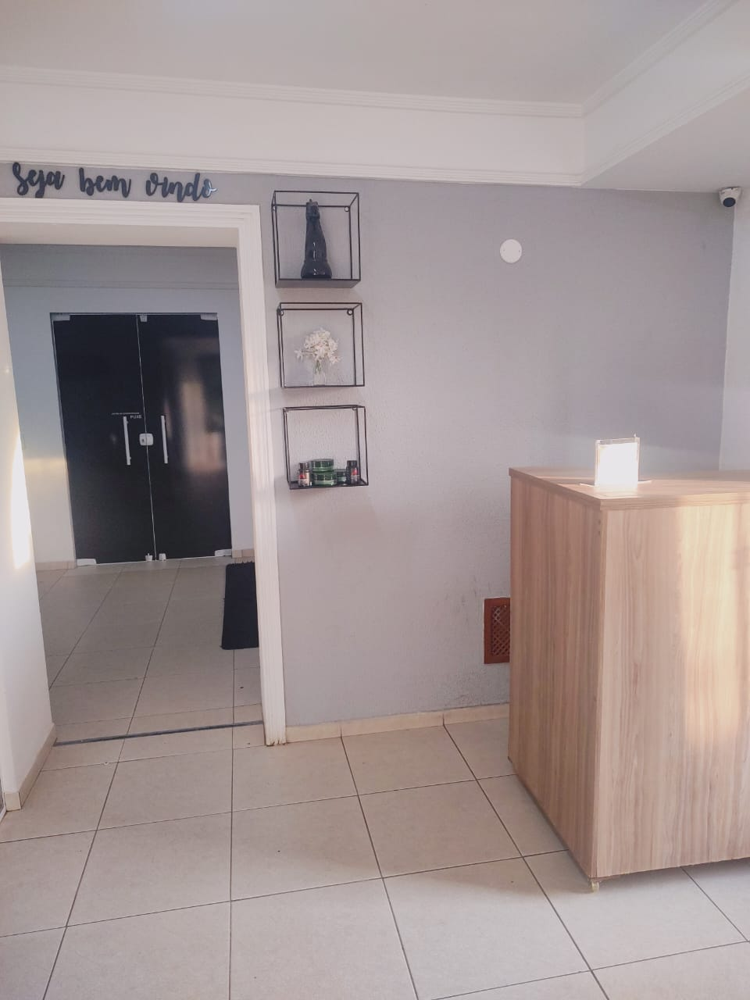
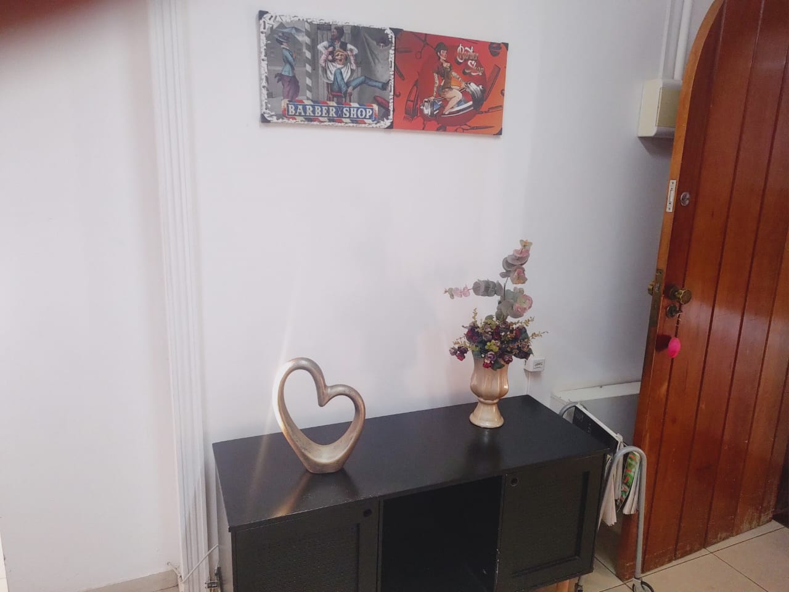
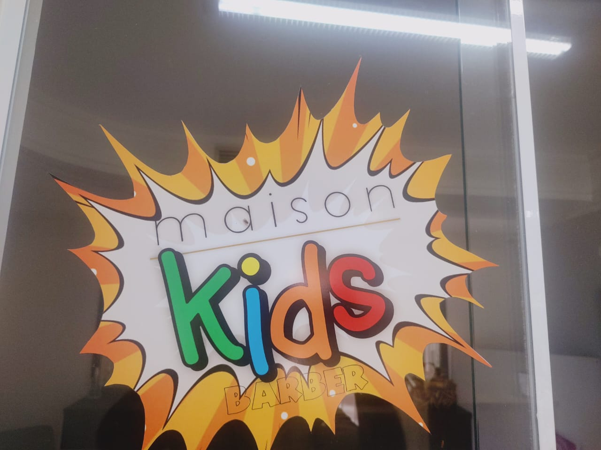
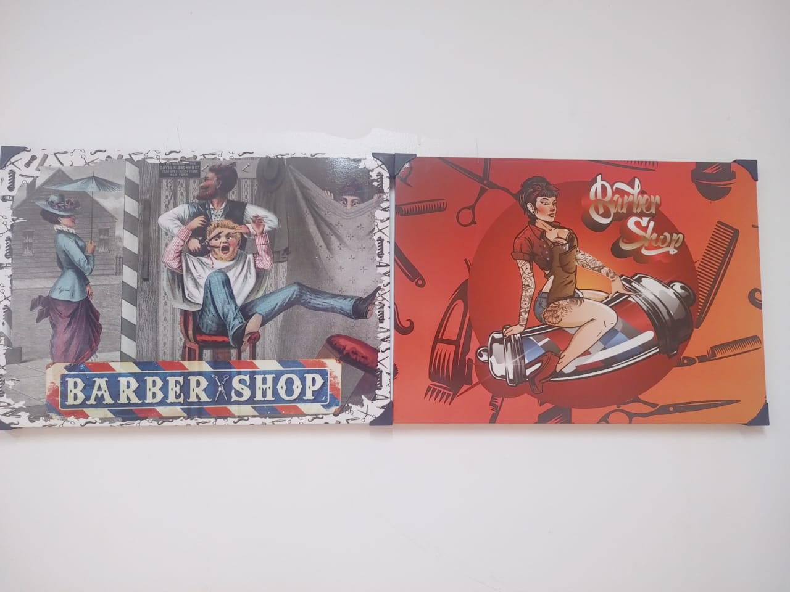
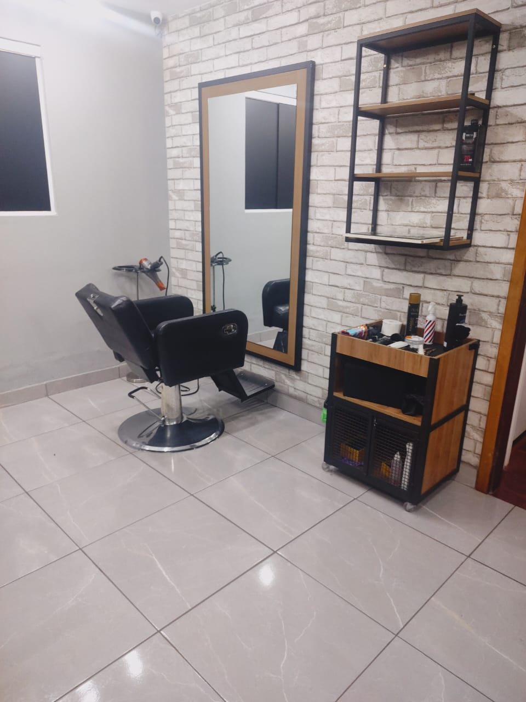
ONDE ME ENCONTRAR
A Maison é o espaço onde recebo meus clientes para transformar visual e cuidado em uma experiência completa.
VAMOS CONVERSAR?
Escolha seu serviço e fale diretamente comigo para encontrar o melhor horário.
◔ Agendar pelo WhatsAppDÚVIDAS
Confira as respostas para as dúvidas mais comuns. Se precisar, fale comigo pelo WhatsApp.
Os atendimentos são realizados na Maison Cabelo e Estética, localizada na Rua José Salmen, nº 4-28, Estoril Centreville, Bauru – SP.
Basta clicar em qualquer botão de agendamento da página. Você será direcionado diretamente para meu WhatsApp.
Cortes na tesoura, degradê, barba com toalha quente, sobrancelhas, depilação nasal e luzes Freehand.
Sim. Entre em contato pelo WhatsApp para consultar os valores e as opções disponíveis.
Sim. Entre em contato pelo WhatsApp para consultar a disponibilidade e combinar seu horário.
Acesse a galeria de trabalhos nesta página e navegue pelas fotografias.
SEU MOMENTO
Será um prazer receber você. Vamos encontrar o melhor horário para seu próximo atendimento.
Agendar meu horário ↗Atendimento na Maison Cabelo e Estética • Bauru – SP